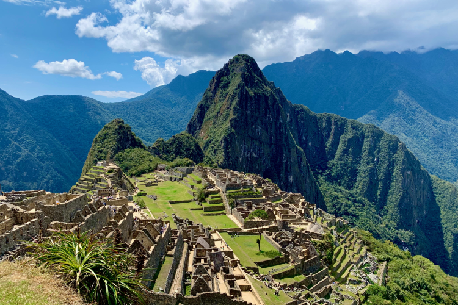

Machu Picchu ― 標高2,400m マチュピチュ
標高2,400mの山道を登りつめると、断崖絶壁に突如として石造りの都市、マチュピチュが姿を現します。山の麓からは遺跡の姿を確認することはできず空中からしか遺跡の存在が確認できないことから、“空中都市”あるいは“インカの失われた都市”と呼ばれています。16世紀にスペイン軍によりインカ帝国が征服され、インカの都市はことごとく破壊されましたが、標高が2,400mに造られたこのマチュピチュは見つかることなく、無傷のまま残されました。
マチュピチュはクスコからウルバンバ川に沿って約㎞進んだジャングルの奥深くにあります。遺跡は標高3,061mのマチュピチュ山（ケチュア語で“年老いた峰”という意味）と2,690mのワイナピチュ山（ケチュア語で“若い峰”という意味）を結ぶ尾根にあたり、麓からは約400mの標高差があります。
マチュピチュは1450年頃、インカ第9代皇帝パチャクティの時代に造られたといわれています。尾根に広がる都市部分だけでも5㎢ありますが、実際には倍以上の広さがあるとされ、現在も調査が進められています。斜面には段々畑が造られ、マチュピチュの住民の食料となるトウモロコシやジャガイモが栽培されました。マチュピチュの都市部は5mにもおよぶ壁に囲まれ、市街はひろばを中心に神聖なエリアや神殿、居住区からなっています。このことからも、クスコと同じような機能をもった、王が滞在する都市の1つだったことが考えられます。また、マチュピチュはアマゾンの熱帯雨林の入り口にあたることから、部族の制圧や物流に関して重要な意味があったとされる説もあります。
マチュピチュへの行き方
マチュピチュには空港がないため、最寄りのクスコまで飛行機で行き、そこから車と列車を乗り継いでマチュピチュ下のマチュピチュ駅へ、さらに専用バスでハイラム・ビンガム・ロードのつづら折りの坂を25分ほど上がってマチュピチュ遺跡入り口に到着します。

マチュピチュへの列車
マチュピチュ行きの列車を運行しているのはペルーレイル(Perurail)、インカ・レイル(Inca Rail)の2社です。乗車駅はクスコ近郊のポロイ(Poroy)駅と、オリャンタイタンボにあるオリャンタイタンボ(Ollantaytambo)駅です。2社ともオリャンタイタンボ駅からの運行本数のほうが多くて利用しやすいため、オリャンタイタンボまでバスか車で行き、そこから電車に乗る方法が一般的です。
チケットは事前購入がおすすめです。各社のウェブサイトから購入することができます。現地では、リマやクスコの空港、アルマス広場にあるオフィス、ワンチャック駅、オリャンタイタンボ駅で購入することができます。ハイシーズンは非常に混み合うので、早めの予約がおすすめです。
乗車の際にはパスポートなどの身分証明書が必要になります。列車はほぼ定刻に発車するので、早めに到着するようにしましょう。列車内に持ち込める荷物は手荷物のバッグの他に、ひとり1つまでです。
ペルーレイルが運行する3種類の列車
便数が最も多く利用しやすいのはペルーレイルです。運航している列車は以下の3種類があり、料金の違い＝サービスの違いとなります。いずれも全席指定でコンピューターに自動で座席が振り分けられます。
- ハイラム・ビンガム Hiram Bingham
- ビスタドーム Vistadome
- エクスペディション Expedition
料金
往復 US$963～1031
片道 ポロイ→マチュピチュUS$585～, マチュピチュ→ポロイUS$560～
ポロイ駅とマチュピチュ駅を結ぶ1番豪華な列車です。列車内でのブランチ（行き）とカクテルディナー（帰り）、マチュピチュ遺跡の入り口にある唯一のホテルであるベルモンド・サンクチュアリ・ロッジでのアフタヌーンティー、マチュピチュの入場料、マチュピチュ駅～マチュピチュ間のシャトルバス往復乗車券、列車内での英語ガイド料金が含まれています。
料金
片道 ポロイ―マチュピチュUS$95～115, オリャンタイタンボ―マチュピチュUS$85～125
最も一般的で、観光客に人気が高い列車がビスタドームです。各車両の上部がガラス張りになっているため、周りの風景がパノラマで眺めることができます。往路・復路ともにドリンクと軽食が付き、車内販売や、マチュピチュ発の復路ではアルパカ製品のファッションショー及び販売も行われます。
料金
片道 ポロイ―マチュピチュUS$75～90, オリャンタイタンボ―マチュピチュUS$60～105
3つのクラスの中で最もリーズナブルな列車です。車両はとてもシンプルで、飲み物とスナック菓子のサービス、車内販売も行われます。
マチュピチュの見どころ
ワイナピチュ Huayna Picchu
マチュピチュの背後にそびえるワイナピチュの頂上から望むマチュピチュのはまさに絶景です。マチュピチュとの標高差は約300mで、山は断崖絶壁でかなりの急こう配、往復で約2時間かかります。
マチュピチュ山 Montaña Machu Picchu
マチュピチュを挟んでワイナピチュと対峙するのが、標高3,061mのマチュピチュ山で、マチュピチュ遺跡の語源となりました。石段をひたすら1時間半上ると、マチュピチュとワイナピチュ、ウルバンバ川が一望できる山頂に到着します。
ワイナピチュとマチュピチュ山は入山規制があり、事前予約が必要です。
マチュピチュの入場時間と料金
マチュピチュ遺跡のみ 時間：6時～16時半 料金：大人S/152 学生S/77
マチュピチュ遺跡とマチュピチュ山 時間：7時～8時入場 9時～10時入場 料金：大人S/200 学生S/125
マチュピチュ遺跡とワイナピチュ 時間：7時～8時入場 10時～11時入場 料金：大人S/152 学生S/77
※学生は国際学生証の提示が必要。子供(8～17歳)は学生と同じ値段。(1ソル=約30円)